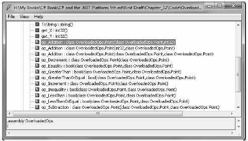
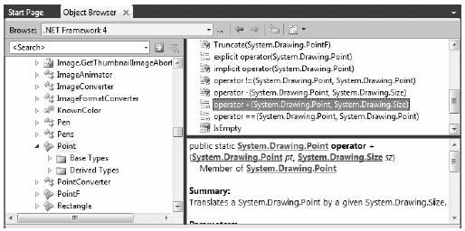

C#, like any programming language, has a canned set of tokens that are used to perform basic operations on intrinsic types. For example, you know that the + operator can be applied to two integers in order to yield a larger integer:
// The + operator with ints. int a = 100; int b = 240; int c = a + b; // c is now 340
Once again, this is no major newsflash, but have you ever stopped and noticed how the same + operator can be applied to most intrinsic C# data types? For example, consider this code:
// + operator with strings. string s1 = "Hello"; string s2 = " world!"; string s3 = s1 + s2; // s3 is now "Hello world!"
In essence, the + operator functions in specific ways based on the supplied data types (strings or integers in this case). When the + operator is applied to numerical types, the result is the summation of the operands. However, when the + operator is applied to string types, the result is string concatenation.
The C# language gives you the capability to build custom classes and structures that also respond uniquely to the same set of basic tokens (such as the + operator). Be aware that you cannot overload every intrinsic C# operator. Table 12-1 outlines the “overloadability” of the core operators.
Table 12-1. Overloadability of C# Operators
| C# Operator | Overloadability |
|---|---|
| +, -, !, ~, ++, --, true, false | These unary operators can be overloaded. |
| +, -, *, /, %, &, |, ^, <<, >> | These binary operators can be overloaded. |
| ==, !=, <, >, <=, >= | These comparison operators can be overloaded. C# demands that “like” operators (i.e., < and >, <= and >=, == and !=) are overloaded together. |
| [] | The [] operator cannot be overloaded. As you saw earlier in this chapter, however, the indexer construct provides the same functionality. |
| () | The () operator cannot be overloaded. As you will see later in this chapter, however, custom conversion methods provide the same functionality. |
| +=, -=, *=, /=, %=, &=, |=, ^=, <<=, >>= | Shorthand assignment operators cannot be overloaded; however, you receive them as a freebie when you overload the related binary operator. |
To illustrate the process of overloading binary operators, assume the following simple Point class is defined in a new Console Application named OverloadedOps:
// Just a simple, everyday C# class. public class Point { public int X {get; set;} public int Y {get; set;} public Point(int xPos, int yPos) { X = xPos; Y = yPos; } public override string ToString() { return string.Format("[{0}, {1}]", this.X, this.Y); } }
Now, logically speaking, it makes sense to “add” Points together. For example, if you added together two Point variables, you should receive a new Point that is the summation of the X and Y values. Of course, it may also be helpful to subtract one Point from another. Ideally, you would like to be able to author the following code:
// Adding and subtracting two points? static void Main(string[] args) { Console.WriteLine("***** Fun with Overloaded Operators *****\n"); // Make two points. Point ptOne = new Point(100, 100); Point ptTwo = new Point(40, 40); Console.WriteLine("ptOne = {0}", ptOne); Console.WriteLine("ptTwo = {0}", ptTwo); // Add the points to make a bigger point? Console.WriteLine("ptOne + ptTwo: {0} ", ptOne + ptTwo); // Subtract the points to make a smaller point? Console.WriteLine("ptOne - ptTwo: {0} ", ptOne - ptTwo); Console.ReadLine(); }
However, as our Point now stands, we will receive compile-time errors, as the Point type does not know how to respond to the + or - operators.
To equip a custom type to respond uniquely to intrinsic operators, C# provides the operator keyword, which you can use only in conjunction with static methods. When you overload a binary operator (such as + and -), you will most often pass in two arguments that are the same type as the defining class (a Point in this example), as illustrated in the following code update:
// A more intelligent Point type. public class Point { ... // overloaded operator + public static Point operator + (Point p1, Point p2) { return new Point(p1.X + p2.X, p1.Y + p2.Y); } // overloaded operator - public static Point operator - (Point p1, Point p2) { return new Point(p1.X - p2.X, p1.Y - p2.Y); } }
The logic behind operator + is simply to return a brand new Point object based on the summation of the fields of the incoming Point parameters. Thus, when you write pt1 + pt2, under the hood you can envision the following hidden call to the static operator + method:
// Pseudo-code: Point p3 = Point.operator+ (p1, p2)
Point p3 = p1 + p2;
Likewise, p1 – p2 maps to the following:
// Pseudo-code: Point p4 = Point.operator- (p1, p2)
Point p4 = p1 - p2;
With this update, our program now compiles, and we find we are able to add and subtract Point objects:
ptOne = [100, 100] ptTwo = [40, 40] ptOne + ptTwo: [140, 140] ptOne - ptTwo: [60, 60]
When you are overloading a binary operator, you are not required to pass in two parameters of the same type. If it makes sense to do so, one of the arguments can differ. For example, here is an overloaded operator + that allows the caller to obtain a new Point that is based on a numerical adjustment:
public class Point { ... public static Point operator + (Point p1, int change) { return new Point(p1.X + change, p1.Y + change); } public static Point operator + (int change, Point p1) { return new Point(p1.X + change, p1.Y + change); } }
Notice that you need both versions of the method if you want the arguments to be passed in either order (i.e., you can’t just define one of the methods and expect the compiler to automatically support the other one). We are now able to use these new versions of operator + as follows:
// Prints [110, 110] Point biggerPoint = ptOne + 10; Console.WriteLine("ptOne + 10 = {0}", biggerPoint); // Prints [120, 120] Console.WriteLine("10 + biggerPoint = {0}", 10 + biggerPoint); Console.WriteLine();
If you are coming to C# from a C++ background, you may lament the loss of overloading the shorthand assignment operators (+=, -=, and so forth). Don’t despair. In terms of C#, the shorthand assignment operators are automatically simulated if a type overloads the related binary operator. Thus, given that the Point structure has already overloaded the + and - operators, you can write the following:
// Overloading binary operators results in a freebie shorthand operator. static void Main(string[] args) { ... // Freebie += Point ptThree = new Point(90, 5); Console.WriteLine("ptThree = {0}", ptThree); Console.WriteLine("ptThree += ptTwo: {0}", ptThree += ptTwo); // Freebie -= Point ptFour = new Point(0, 500); Console.WriteLine("ptFour = {0}", ptFour); Console.WriteLine("ptFour -= ptThree: {0}", ptFour -= ptThree); Console.ReadLine(); }
C# also allows you to overload various unary operators, such as ++ and --. When you overload a unary operator, you also define a static method via the operator keyword; however, in this case you simply pass in a single parameter that is the same type as the defining class/structure. For example, if you were to update the Point with the following overloaded operators:
public class Point { ... // Add 1 to the X/Y values incoming Point. public static Point operator ++(Point p1) { return new Point(p1.X+1, p1.Y+1); } // Subtract 1 from the X/Y values incoming Point. public static Point operator --(Point p1) { return new Point(p1.X-1, p1.Y-1); } }
you could increment and decrement Point’s x and y values like this:
static void Main(string[] args) { ... // Applying the ++ and -- unary operators to a Point. Point ptFive = new Point(1, 1); Console.WriteLine("++ptFive = {0}", ++ptFive); // [2, 2] Console.WriteLine("--ptFive = {0}", --ptFive); // [1, 1] // Apply same operators as postincrement/decrement. Point ptSix = new Point(20, 20); Console.WriteLine("ptSix++ = {0}", ptSix++); // [20, 20] Console.WriteLine("ptSix-- = {0}", ptSix--); // [21, 21] Console.ReadLine(); }
Notice in the preceding code example we are applying our custom ++ and -- operators in two different manners. In C++, it is possible to overload pre- and postincrement/decrement operators separately. This is not possible in C#. However, the return value of the increment/decrement is automatically handled “correctly” free of charge (i.e., for an overloaded ++ operator, pt++ has the value of the unmodified object as its value within an expression, while ++pt has the new value applied before use in the expression).
As you may recall from Chapter 6, System.Object.Equals() can be overridden to perform value-based (rather than referenced-based) comparisons between reference types. If you choose to override Equals() (and the often related System.Object.GetHashCode() method), it is trivial to overload the equality operators (== and !=). To illustrate, here is the updated Point type:
// This incarnation of Point also overloads the == and != operators. public class Point { ... public override bool Equals(object o) { return o.ToString() == this.ToString(); } public override int GetHashCode() { return this.ToString().GetHashCode(); } // Now let's overload the == and != operators. public static bool operator ==(Point p1, Point p2) { return p1.Equals(p2); } public static bool operator !=(Point p1, Point p2) { return !p1.Equals(p2); } }
Notice how the implementation of operator == and operator != simply makes a call to the overridden Equals() method to get the bulk of the work done. Given this, you can now exercise your Point class as follows:
// Make use of the overloaded equality operators. static void Main(string[] args) { ... Console.WriteLine("ptOne == ptTwo : {0}", ptOne == ptTwo); Console.WriteLine("ptOne != ptTwo : {0}", ptOne != ptTwo); Console.ReadLine(); }
As you can see, it is quite intuitive to compare two objects using the well-known == and != operators rather than making a call to Object. Equals(). If you do overload the equality operators for a given class, keep in mind that C# demands that if you override the == operator, you must also override the != operator (if you forget, the compiler will let you know).
In Chapter 9, you learned how to implement the IComparable interface in order to compare the relationship between two like objects. You can, in fact, also overload the comparison operators (<, >, <=, and >=) for the same class. As with the equality operators, C# demands that if you overload <, you must also overload >. The same holds true for the <= and >= operators. If the Point type overloaded these comparison operators, the object user could now compare Points as follows:
// Using the overloaded < and > operators. static void Main(string[] args) { ... Console.WriteLine("ptOne < ptTwo : {0}", ptOne < ptTwo); Console.WriteLine("ptOne > ptTwo : {0}", ptOne > ptTwo); Console.ReadLine(); }
Assuming you have implemented the IComparable interface, overloading the comparison operators is trivial. Here is the updated class definition:
// Point is also comparable using the comparison operators. public class Point : IComparable { ... public int CompareTo(object obj) { if (obj is Point) { Point p = (Point)obj; if (this.X > p.X && this.Y > p.Y) return 1; if (this.X < p.X && this.Y < p.Y) return -1; else return 0; } else throw new ArgumentException(); } public static bool operator <(Point p1, Point p2) { return (p1.CompareTo(p2) < 0); } public static bool operator >(Point p1, Point p2) { return (p1.CompareTo(p2) > 0); } public static bool operator <=(Point p1, Point p2) { return (p1.CompareTo(p2) <= 0); } public static bool operator >=(Point p1, Point p2) { return (p1.CompareTo(p2) >= 0); } }
Like any C# programming element, overloaded operators are represented using specific CIL syntax. To begin examining what takes place behind the scenes, open the OverloadedOps.exe assembly using ildasm.exe. As you can see from Figure 12-1, the overloaded operators are internally expressed via hidden methods (such as op_Addition(), op_Subtraction(), op_Equality(), and so on).
Figure 12-1. In terms of CIL, overloaded operators map to hidden methods
Now, if you were to examine the specific CIL instructions for the op_Addition method (the one that takes two Point parameters), you would find that the specialname method decoration has also been inserted by the compiler:
.method public hidebysig specialname static
class OverloadedOps.Point
op_Addition(class OverloadedsOps.Point p1,
class OverloadedOps.Point p2) cil managed
{
...
}
The truth of the matter is that any operator that you may overload equates to a specially named method in terms of CIL. Table 12-2 documents the C# operator-to-CIL mapping for the most common C# operators.
Table 12-2. C# Operator-to-CIL Special Name Road Map
| Intrinsic C# Operator | CIL Representation |
|---|---|
| -- | op_Decrement() |
| ++ | op_Increment() |
| + | op_Addition() |
| - | op_Subtraction() |
| * | op_Multiply() |
| / | op_Division() |
| == | op_Equality() |
| > | op_GreaterThan() |
| < | op_LessThan() |
| != | op_Inequality() |
| >= | op_GreaterThanOrEqual() |
| <= | op_LessThanOrEqual() |
| -= | op_SubtractionAssignment() |
| += | op_AdditionAssignment() |
As you have seen, C# provides the capability to build types that can respond uniquely to various intrinsic, well-known operators. Now, before you go and retrofit all your classes to support such behavior, you must be sure that the operator(s) you are about to overload make some sort of logical sense in the world at large.
For example, let’s say you overloaded the multiplication operator for the MiniVan class. What exactly would it mean to multiply two MiniVan objects? Not much. In fact, it would be very confusing for teammates to see the following use of MiniVan objects.
// Huh?! This is far from intuitive...
MiniVan newVan = myVan * yourVan;
Overloading operators is generally useful only when you’re building utility types. Strings, points, rectangles, fractions, and hexagons make good candidates for operator overloading. People, managers, cars, database connections, and web pages do not. As a rule of thumb, if an overloaded operator makes it harder for the user to understand a type’s functionality, don’t do it. Use this feature wisely.
Also, be aware that even if you do not generally overload operators for your custom classes, numerous types in the base class libraries have already done so. For example, the System.Drawing.dll assembly provides a Windows Forms-centric Point definition that overloads numerous operators. Notice the operator icon from the Visual Studio 2010 Object Browser shown in Figure 12-2.
Figure 12-2. Numerous types in the base class libraries have already overloaded operators
Source Code The OverloadedOps project is located under the Chapter 12 subdirectory.